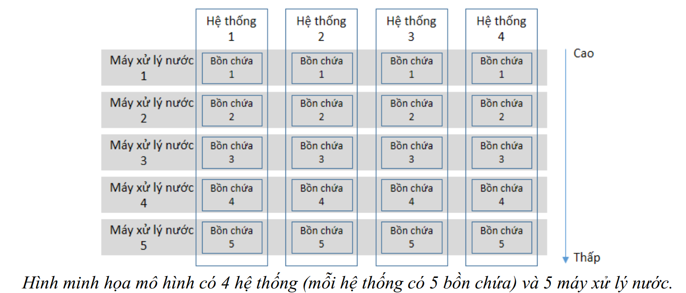

0 Đề Bài Chi Tiết
Trên một vùng núi, người dân tự thiết kế mô hình xử lý nước uống cho các hộ dân vùng cao. Họ đặt \(n\) hệ thống lưu giữ nước từ các nguồn trên cao đổ về. Lượng nước đưa vào \(n\) hệ thống lần lượt là \(a_1, a_2, \dots, a_n\) (lít).
Các hệ thống có cấu tạo giống nhau. Mỗi hệ thống có \(m\) bồn chứa nước được đánh số từ \(1, 2, \dots, m\) với dung tích lần lượt là \(r_1, r_2, \dots, r_m\) (lít). Bồn chứa nước số 1 được đặt ở vị trí cao nhất, tiếp đến là bồn số 2, \dots và thấp nhất là bồn số \(m\). Khi nước vào hệ thống, nước sẽ chảy vào bồn số 1 trước, chỉ khi nào đầy bồn số 1, nước mới chảy tiếp qua bồn số 2, tương tự cho đến bồn số \(m\).
Đồng thời, họ xây dựng \(m\) máy xử lý nước uống. Máy xử lý nước số 1 sẽ xử lý nước từ các bồn chứa số 1 của tất cả các hệ thống. Tương tự cho các máy xử lý nước còn lại.
Yêu cầu:
Hãy viết chương trình tính lượng nước thu được trong từng máy xử lý nước.

Dữ liệu vào (LOCNUOC.INP):
- Dòng đầu: Hai số nguyên \(n, m\) (\(1 \le n \le 2 \cdot 10^5, 1 \le m \le 10^9\)).
- Dòng hai: \(n\) số nguyên \(a_1, a_2, \dots, a_n\) (\(1 \le a_i \le 10^5\)).
- Dòng ba: \(m\) số nguyên \(r_1, r_2, \dots, r_m\) (\(1 \le r_i \le 10^5\)).
Kết quả ra (LOCNUOC.OUT):
Ghi ra một dòng gồm các số nguyên là lượng nước thu được ở từng máy xử lý có nước. Các số cách nhau một khoảng trắng.
Ví dụ (Sample Test)
| LOCNUOC.INP | LOCNUOC.OUT | Giải thích |
|---|---|---|
| 4 5 6 8 2 5 4 3 2 7 6 | 14 6 1 |
Dung tích của 5 bồn chứa nước lần lượt là 4, 3, 2, 7, 6 lít. |
1 Phân Tích Toán Học & Logic
Dạng bài: Mô phỏng (Simulation), Mảng Cộng Dồn (Prefix Sum), Tìm Kiếm Nhị Phân (Binary Search) / Mảng Hiệu (Difference Array).
Cảnh báo giới hạn & Kiểu dữ liệu
- Kích thước \(m \le 10^9\), nếu duyệt qua tất cả \(m\) bồn sẽ bị Time Limit Exceeded (TLE) và không thể lưu mảng kích thước \(10^9\).
- Nhận xét quan trọng: \(a_i \le 10^5\), lượng nước tối đa trong một hệ thống là \(10^5\). Vì mỗi bồn \(r_j \ge 1\), nước chảy sâu nhất không vượt quá \(10^5\) tầng bồn. Vậy ta chỉ cần quan tâm tối đa \(10^5\) bồn đầu tiên!
- Tổng nước có thể lên tới \(N \times \max(a_i) = 2 \cdot 10^5 \times 10^5 = 2 \cdot 10^{10}\). Do đó, tổng nước thu được ở mỗi máy phải dùng kiểu số nguyên 64-bit (long long trong C++ / mặc định trong Python).
Mô hình hóa: Xét riêng một hệ thống có \(x\) lít nước (\(x = a_i\)). Hệ thống này sẽ đi qua các bồn có dung tích \(r_1, r_2, \dots, r_m\).
Gọi mảng cộng dồn của \(r\) là \(P\), với \(P_k = \sum_{j=1}^k r_j\).
Hệ thống có \(x\) nước sẽ:
- Làm đầy hoàn toàn các bồn từ \(1\) đến \(k\), với \(k\) là chỉ số lớn nhất sao cho \(P_k \le x\).
- Đổ phần dư \((x - P_k)\) vào bồn thứ \(k+1\).
- Các bồn từ \(k+2\) trở đi không nhận được giọt nước nào.
2 Phân Tích Cách Giải
Cách 1: Vét cạn (Brute Force) - 40% số điểm
Ý tưởng: Mô phỏng chính xác quá trình nước chảy. Duyệt qua từng hệ thống, với mỗi hệ thống ta lại duyệt qua từng bồn chứa, trừ dần lượng nước hiện có.
For i = 1 to n:
water = a[i]
For j = 1 to m:
if water == 0: break
take = min(water, r[j])
ans[j] += take
water -= take
def solve_subtask_1(n, m, a, r):
ans = [0] * m
for water in a:
for j in range(m):
if water == 0:
break
take = min(water, r[j])
ans[j] += take
water -= take
# In ra kết quả các máy có nước
res = []
for x in ans:
if x > 0: res.append(x)
else: break
print(" ".join(map(str, res)))Cách 2: Prefix Sum + Mảng Hiệu (Optimal) - 100% số điểm
Ý tưởng: Rút gọn vòng lặp bồn \(m\) xuống \(\le 10^5\). Tạo mảng cộng dồn \(P\) cho bồn chứa. Với mỗi lượng nước \(x = a_i\), dùng Tìm kiếm nhị phân (Binary Search) để tìm số bồn \(k\) bị làm đầy hoàn toàn. Thay vì cộng tuần tự cho từng bồn, ta dùng mảng hiệu (Difference Array) để đánh dấu số lượng hệ thống làm đầy bồn, và một mảng riêng để cộng phần dư.
1. Tạo prefix sum P cho mảng r (chỉ tạo tới khi P[k] > max(A)).
2. Khởi tạo mảng diff = [0], partial = [0].
3. For x in a:
Tìm k lớn nhất sao cho P[k] <= x.
Tăng diff[1] += 1; Giảm diff[k+1] -= 1 (đánh dấu làm đầy bồn 1 đến k).
Cộng phần dư: partial[k+1] += (x - P[k]).
4. Cộng dồn mảng diff để tính tổng số hệ thống làm đầy bồn j.
5. Nước ở bồn j = diff[j] * r[j] + partial[j].
import bisect
def solve_optimal(n, m, a, r):
max_a = max(a)
# 1. Giới hạn số lượng bồn thực tế cần quan tâm
P = [0]
sum_r = 0
eff_m = 0
for x in r:
sum_r += x
P.append(sum_r)
eff_m += 1
if sum_r > max_a:
break
diff = [0] * (eff_m + 2)
partial = [0] * (eff_m + 2)
# 2. Xử lý từng hệ thống bằng mảng hiệu
for x in a:
if x == 0: continue
# Tìm bồn cuối cùng bị làm đầy hoàn toàn (chỉ số 1-based)
k = bisect.bisect_right(P, x) - 1
if k > 0:
diff[1] += 1
diff[k + 1] -= 1
# Bồn k+1 nhận phần nước dư
if k < eff_m and x - P[k] > 0:
partial[k + 1] += (x - P[k])
# 3. Phục hồi mảng kết quả
res = []
full_count = 0
for j in range(1, eff_m + 1):
full_count += diff[j]
# Tổng nước = Số hệ thống làm đầy * dung tích + phần nước dư lẻ
ans = full_count * r[j - 1] + partial[j]
if ans > 0:
res.append(ans)
else:
break
print(" ".join(map(str, res)))3 Bảng So Sánh Thuật Toán
| Tiêu Chí | Cách 1 (Vét Cạn) | Cách 2 (Mảng Hiệu) |
|---|---|---|
| Thời Gian (Time) | \(O(N \times M)\) | \(O(N \log K + K)\) với \(K \le 10^5\) |
| Không Gian (Space) | \(O(M)\) | \(O(K)\) |
| Giới hạn qua được | Subtask 1 (40đ) | Full Subtask (100đ) |
| Đánh giá | TLE do 2 vòng lặp lồng nhau khi \(N, M\) lớn. | AC. Tối ưu cực tốt nhờ tính chất chặn được số lượng bồn \(K\). |